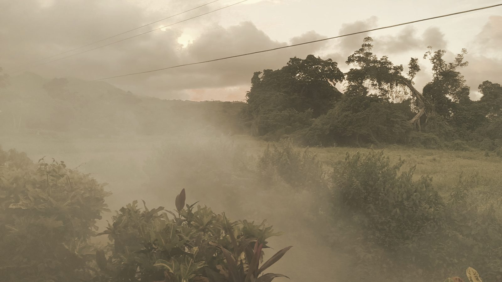

Thinking · Staying here
The experience
What should it feel like to stay at the land? None of it is built yet: the plan is to build from February 2027, hold a trial in June and open for the carnival season in July. So this is a set of choices still in play, each with something for it and something against.
Rob Berkeley · October 2026
The place
Seven acres at Simon, in St Andrew, on Grenada's east coast. It's farmed land with a mill ruin and a public footpath, not resort land. The sea is a seven-minute walk from the house, not a view from it. The view runs west to the inland hills and the sunset. This short film walks the site plan: the house, the old warehouse that would become the kitchen, and the mango grove.
That's a strength and a limit. It's a real village with a working life, which some visitors will love. Others will want a beach on the doorstep, and this isn't that.
Where people stay
The whole house, let to one party, usually two couples, with the kitchen, the arched verandah and the roof terrace to themselves. A suite in the mango grove: three suites round a shared yard, each taking a couple, a family of four, or six with the sofa bed, with a team or residential course able to take the whole grove. The first two suites would open with the business, the third later.
For this mix: it suits different groups, from couples to families at Carnival to a team. Against it: a shared yard means guests are near each other. Flat-pack modules, however well finished, are not a stone house. And I would be living on site, which some guests will find reassuring and others may feel as a presence. The plan keeps cameras out of the yards, so the grove feels private.
The table
Everything turns on one kitchen in the old warehouse. The ideas are a Friday Lunch & Lime with our own chef and a set menu, aimed at leaving dos and office celebrations; supper clubs with visiting chefs, who set the menu and the price, for about thirty on the verandah; sunset drinks for six on the roof terrace; and a takeaway window to the road.
If everyone came we'd have a terrible time. I need thirty diners. The club element of the supper club is key.
For it: food brings local people as well as visitors, and visiting chefs bring variety and their own followings. Against it: it's the busiest, riskiest part of the plan. Visiting chefs don't staff a weekly lunch, so consistency depends on hiring someone. We need a liquor licence. Nobody has yet asked a Grenadian what they'd pay for a supper-club seat. And guests in the house may not want thirty diners on their verandah on a Saturday night. Mixing a quiet stay with a busy table needs care.
The register
Simon already has its evenings: a Friday night club by the nearest beach, loud enough to hear from the house, and a sports bar by the Board Bridge. The aim is something different: artists, women, dining, live music, the diaspora and culture, under fairy lights. There's also an idea for a monthly midweek gathering for the UK diaspora. The case for that register is that it fills a real gap. The case against is that a gap can mean a missing market as well as an opening, and the people who run those venues are our neighbours, so how we fit in matters as much as how we stand out.
The village and Carnival
Simon has more going on than it looks: Seamoon Industrial Park, with a call centre of around 800 staff; a FIFA-funded football centre being built; Seamoon Cultural Centre; and the Soca Monarch semi-finals at Seamoon Pavilion every year. Spicemas in 2027 falls on 9 and 10 August. Electric scooters and trikes would help guests get about, though guests with only a car licence would ride them on the land, not the road. For: reasons to come all year, not just for a beach. Against: Carnival weeks are when the family most wants the house, and when everyone's prices are highest.
Where things stand
Decided so far: the house let whole, three suites in the grove, one kitchen, and a Friday lunch with our own chef from the first year. Not built: any of it. The pool, firepit and film nights wait for later stages. What would change the picture: what local people will actually pay, whether the first supper clubs fill, how the trial guests in June feel about sharing the land with diners, and whether the planners approve the suites. I'd rather learn those things and adjust than promise an experience we can't yet deliver.